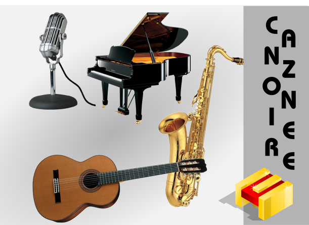

😊
Ciaooooo!
😊
Clicca sul catalogo (🎸 o ⛪)
🎸 Canzoniere Pop / Rock
⛪ Canzoniere Liturgico
📋 Avvia una Scaletta Liturgica Pronta:
⛪ Messa: Domenica Tempo Ordinario
Torna a 🏠 per la SCELTA
Canzoniere Smart
di Emanuele Carpanzano
🔍 Cerca Canzone o Autore:
⚙️ Pannello Controlli
📋 Pannello Scaletta
⬅ Elenco Brani
-1 Semitono
+1 Semitono
ITA
ENG
Tonalità: Originale
↔️ Compatta WCAG
▶ Auto-Scroll
Slower
Faster
Velocità: 1x
Modalità Offline locale:
Seleziona il file
dentro la cartella configurata:
Caricamento in corso...
📋 Scaletta Attiva
Nessuna scaletta